アプリ名: OffLink
対象ユーザー: 同じ WiFi ネットワーク内でグループ音声通話をしたい方
作成日: 2026年3月9日
最終更新: 2026年4月11日
OffLink は、同一 WiFi / テザリング環境内でインターネットなしにグループ音声通話ができるアプリです。 WebRTC による P2P 通信で低遅延の音声通話を実現します。
利用シーン例:
アプリ起動直後のホーム画面。下部の3つのボタンから操作を開始します。
OffLink は WiFi LAN モード で動作します。 全員が同じ WiFi ネットワーク（自宅 WiFi、モバイルテザリング、ポケット WiFi 等）に接続した状態で、 ホスト端末がシグナリングサーバーを起動し、同一ネットワーク内の端末同士で音声通話を行います。
ポイント: インターネット接続は不要です。ルーターやテザリング端末が電波を出していれば通話できます。
| 役割 | 対応デバイス | 説明 |
|---|---|---|
| ホスト（通話の主催者） | Android / iPhone | シグナリングサーバーを起動し通話を管理する端末 |
| ゲスト（参加者） | Android / iPhone | ホストが作成した通話に参加する端末 |
注意: 全員が同一の WiFi ネットワークに接続している必要があります。
アプリの初回起動時に以下のパーミッションを一括で要求します。 すべて「許可」しないと一部機能が動作しません。
| パーミッション | 用途 | 拒否した場合の影響 |
|---|---|---|
| マイク | 音声通話 | 通話不可 |
| カメラ | QR コードスキャン | QR でのグループ登録不可 |
| 近くのデバイス（WiFi） ※Android | WiFi ネットワーク検出・ホスト探索 | ホスト検出不可 |
| 位置情報 ※Android | WiFi スキャン（Android OS の要件） | WiFi SSID の取得不可 |
| Bluetooth ※Android | Bluetooth ヘッドセット連携 | ヘッドセット使用不可 |
| 通知 ※Android | 通話招待の通知 | バックグラウンド時に通知が届かない |
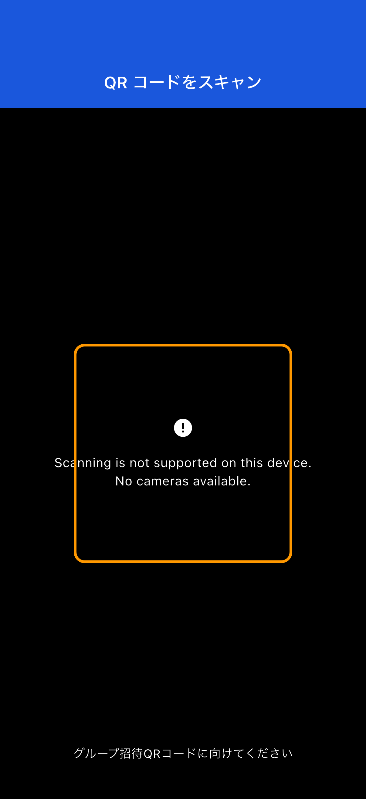
パーミッションを誤って拒否した場合:
アプリが設定画面への誘導ダイアログを表示します。端末の「設定」→「アプリ」→「OffLink」からパーミッションを変更してください。
（自宅 WiFi、テザリング、ポケット WiFi など）
事前にグループを作成せず、同じ WiFi に接続しているメンバーとすぐに通話を始められます。
Step 1: 全員が同じ WiFi ネットワークに接続します。
Step 2: ホーム画面の 「今すぐ通話」（緑色のボタン）をタップします。
Step 3: ユーザー名を入力するダイアログが表示されます。通話中に他メンバーに表示される名前を入力します。
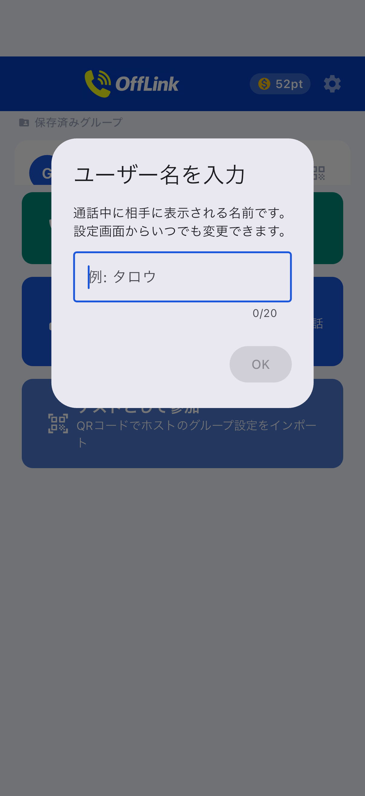
Step 4: ポイント消費画面でティアを選択し、通話を開始します（→ 3-5. ポイントシステム を参照）。
Step 5: 同じ WiFi ネットワーク内の他メンバーに通話招待が自動通知されます。メンバーが参加すると通話が開始されます。
既存のホストがいる場合:
同じネットワーク内に既にホストがいる場合、参加するか新しく通話を開始するかを選択できます。
繰り返し同じメンバーで通話する場合は、グループを作成して保存しておくと便利です。
Step 1: ホーム画面の 「ホストとして作成」（青色のボタン）をタップします。
Step 2: グループ作成画面で グループ名 と パスワード（任意） を入力し、「作成する」 をタップします。

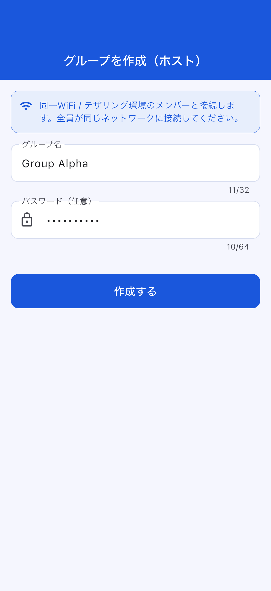
Tips:
- グループ名はメンバーに分かりやすい名前にしましょう（例:ツーリングA組、倉庫連絡）
- パスワードを設定すると、知らない人が参加できなくなります（推奨）
Step 3: 作成アクションを選びます。ボトムシートが表示されます。
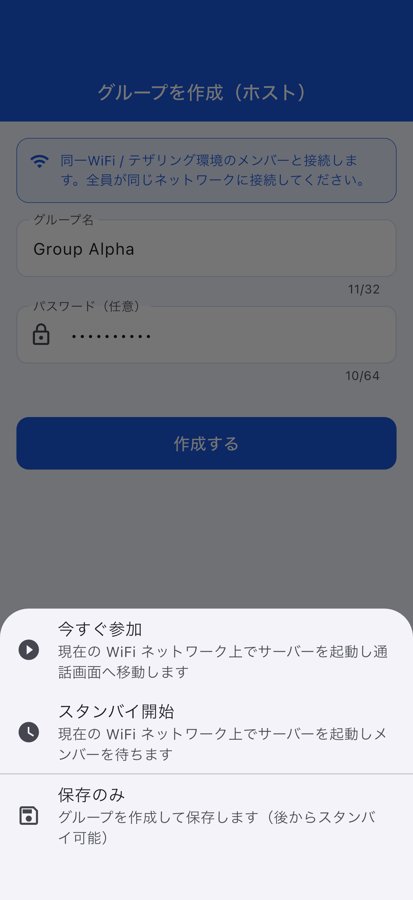
| アクション | 説明 |
|---|---|
| 今すぐ参加 | WiFi LAN 上でサーバーを起動し、すぐに通話画面へ移動 |
| スタンバイ開始 | サーバーを起動してメンバーの接続を待機 |
| 保存のみ | グループ情報を保存するだけ（後から開始可能） |
メンバー（ゲスト）は、ホストからグループ情報を受け取って参加登録します。
Step 1: ホーム画面の 「ゲストとして参加」（水色のボタン）をタップします。
Step 2: 参加方法を選びます。3つの方法があります。
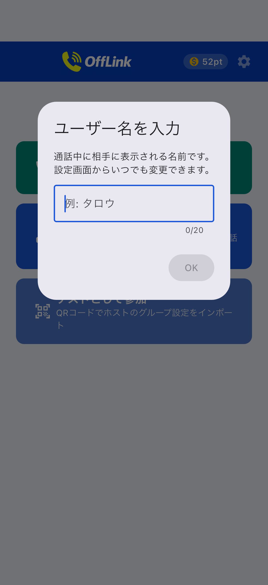
| 方法 | 操作 |
|---|---|
| 📱 QR コードをスキャン | ホストが表示した QR コードをカメラで読み取る（最も簡単） |
| 📋 コードを貼り付け | ホストから LINE 等で共有されたコードを貼り付ける |
| ✏️ 手動入力 | グループ名・SSID・パスワードを直接入力する |
QR コードでのグループ共有（ホスト側）:
ホストはホーム画面のグループカード右側の QR アイコンをタップして QR コードを表示できます。

他のメンバーは OffLink の「QR をスキャン」で読み取れます。
コード貼り付けでの参加（ゲスト側）:
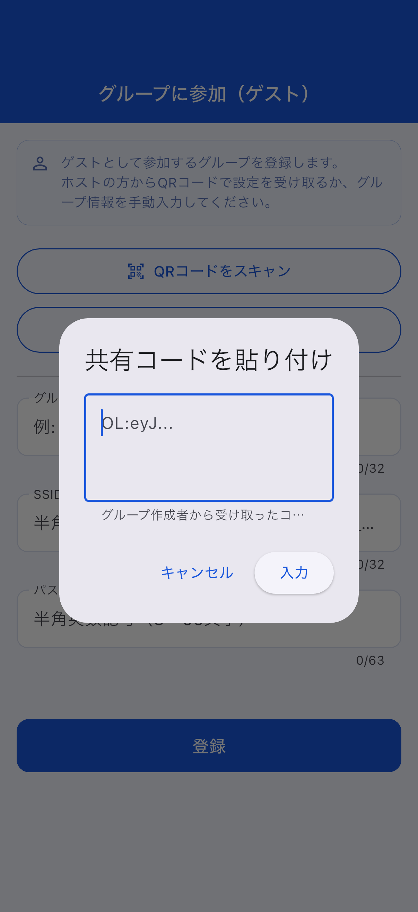
Step 3: グループ情報が自動入力されたら 「登録」 をタップします。
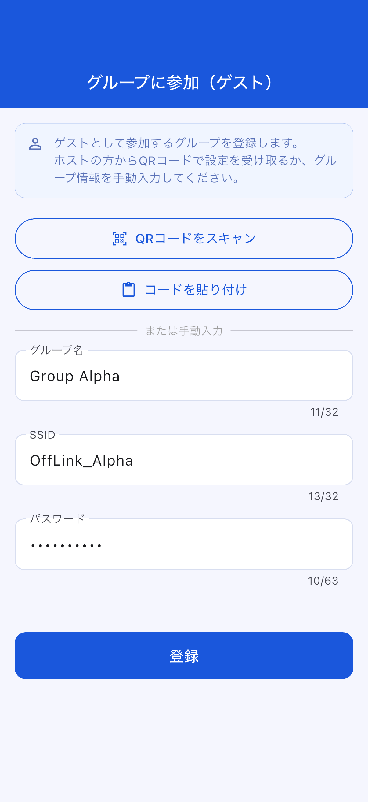
一度作成・登録したグループはホーム画面に保存されます。
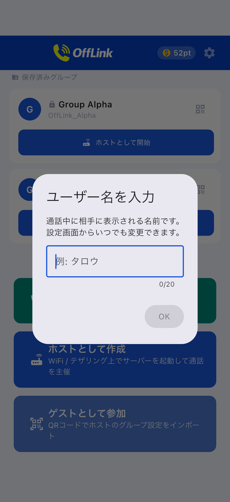
ゲスト側の参加画面:
ユーザー名を入力し、参加するグループを選択します。
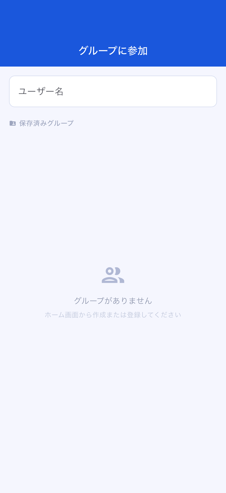
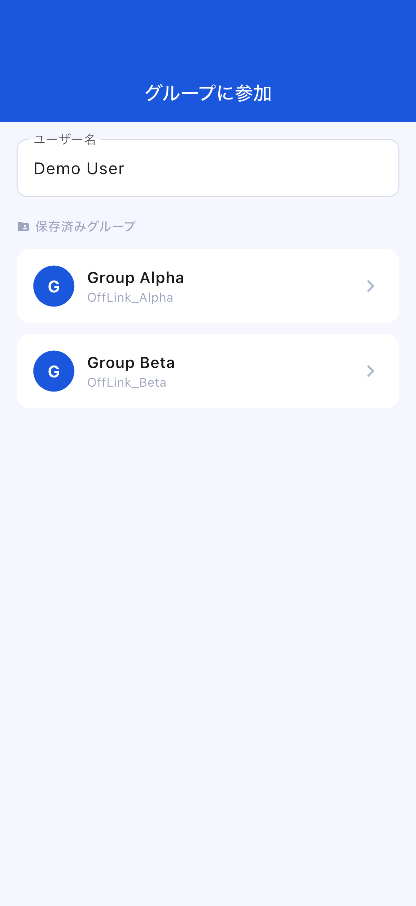
スタンバイ画面:
ホストがサーバーを起動すると、スタンバイ画面で接続待機中の状態が表示されます。
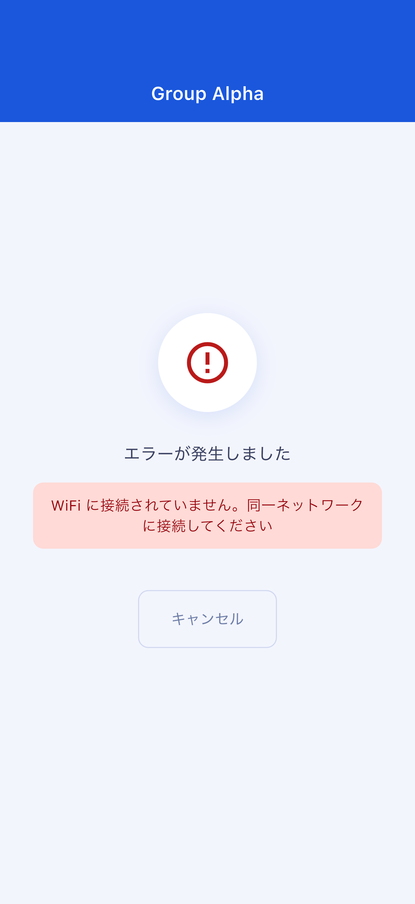
通話画面:
接続が完了すると自動的に通話画面に遷移します。
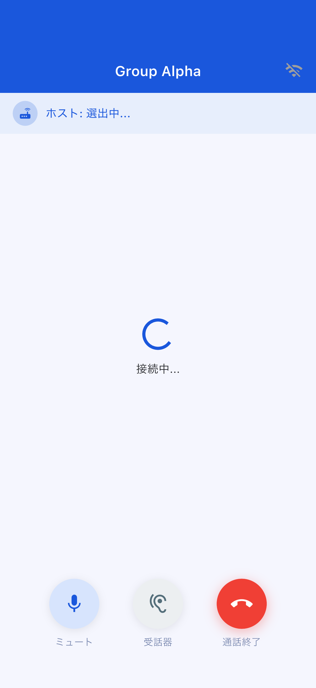
通話画面の操作:
| ボタン | 機能 |
|---|---|
| 🎤 ミュート | 自分のマイクをオン/オフ切り替え |
| 🔊 音声出力切り替え | スピーカー / Bluetooth / イヤピースを切り替え |
| 🔴 通話終了 | 通話から退出 |
通話の開始にはポイントが必要です。ポイントはリワード広告の視聴で獲得できます。
| ティア | 消費ポイント | 最大参加人数 |
|---|---|---|
| Standard | 10 pt | 4 人 |
| Large | 20 pt | 10 人 |
ポイントが足りない場合: リワード広告を視聴すると 10pt を獲得できます。画面に表示される広告視聴ボタンをタップしてください。
確認事項:
現在のバージョンではホットスポット（WiFi テザリング）を OffLink 内から自動起動する機能はありません。 代わりに、テザリングを使いたい場合は Android 端末の設定アプリから手動でテザリングをオンにし、全員がそのネットワークに接続してください。
確認事項:
確認事項:
アプリが設定画面への誘導ダイアログを表示します。端末の 「設定」→「アプリ」→「OffLink」→「権限」 から必要なパーミッションを「許可」に変更してください。
| 項目 | 制限内容 |
|---|---|
| 最大参加人数 | Standard: 4人 / Large: 10人 |
| 通話方式 | 同一 WiFi ネットワーク内（WiFi LAN）のみ |
| バックグラウンド動作 | 機種・OS バージョンにより制限される場合があります |
| グループ保存上限 | Free ユーザーは 5 グループまで（Premium は無制限） |
| 項目 | 推奨 |
|---|---|
| Android | Android 5.0 以上（API 21+） |
| iOS | iOS 13.0 以上 |
| バッテリー残量 | 80% 以上推奨（ホスト端末はバッテリー消費が大きいため） |
| ストレージ空き容量 | 100MB 以上 |
| WiFi 環境 | ルーター / テザリング / ポケット WiFi 等、同一ネットワーク接続可能な環境 |